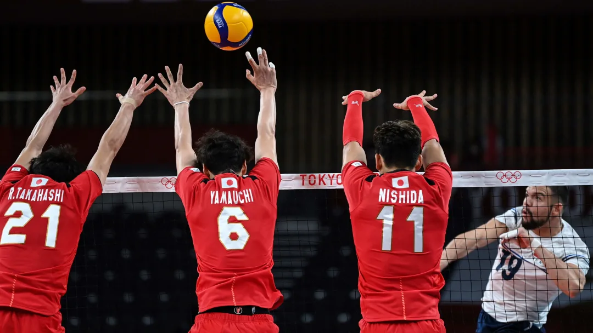
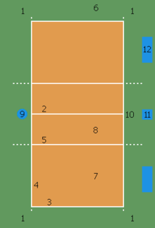
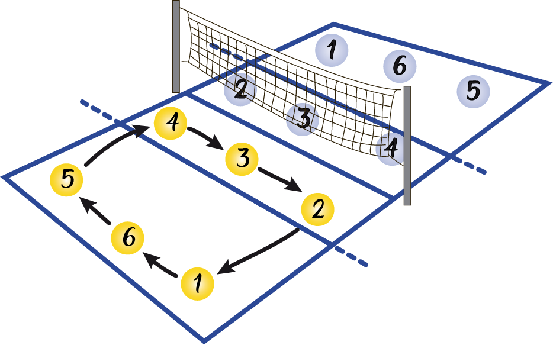

Es un deporte que se juega con una pelota y en el que dos equipos, integrados por seis jugadores cada uno, se enfrentan sobre una área de juego separada por una red central. El objetivo del juego es pasar el balón por encima de la red, logrando que llegue al suelo del campo contrario mientras el equipo adversario intenta impedir simultáneamente que lo consiga, forzándolo a errar en su intento. Surge una fase de ataque en un equipo cuando intenta que el balón toque el suelo del campo contrario mientras que en el otro equipo surge una fase de defensa intentando impedirlo.
El balón debe ser tocado o impulsado con golpes limpios, pero no puede ser parado, sujetado, retenido o acompañado. Cada equipo dispone de un máximo de tres toques para devolver el balón al campo contrario (además del contacto del bloqueo).El balón se golpea normalmente con manos y brazos. Desde hace algunos años está permitido el contacto del balón con cualquier parte del cuerpo, incluidos los pies. Una de las características más peculiares del voleibol es que los jugadores tienen que ir rotando sus posiciones a medida que van consiguiendo puntos.
El voleibol fue creado el 9 de febrero de 1895 por William George Morgan, entrenador deportivo de la Asociación Cristiana de Jóvenes (YMCA) en Holyoke. Morgan había realizado sus estudios en el Colegio de Springfield de la YMCA donde conoció a James Naismith quien, en 1891, había inventado el juego del baloncesto. El voleibol fue ideado en principio como una alternativa más sosegada al baloncesto, pues aunque este se adaptaba bien a los jóvenes, los miembros de mayor edad requerían un juego menos intenso. Inicialmente lo denominó Mintonette. Por tanto el baloncesto y el voleibol se inventaron al final del siglo xix en dos ciudades, Holyoke y Springfield, separadas por solo 16 km y ambos deportes surgieron en la Asociación Cristiana de Jóvenes (YMCA) difundiéndose rápidamente a nivel internacional por todas sus organizaciones asociadas. Fue diseñado para gimnasios o lugares cerrados y también se puede jugar al aire libre. Se trataba de un juego por equipos, que guardaba semejanzas con el tenis o el balonmano. Morgan desarrolló también las primeras reglas, las que contemplaban un campo de juego de 7,62 m x 15,24 m (25 pies x 50 pies) y una red de 1,98 m de altura (6 pies con 6 pulgadas). El número de jugadores era ilimitado, como así mismo la cantidad permitida de contactos con el balón. En caso de una jugada de saque erróneo, existía una segunda oportunidad, tal como en el tenis. Con motivo de la conferencia de todos los entrenadores deportivos del YMCA realizada en Springfield a comienzos del año 1896, Morgan presentó el nuevo juego y encontró buena resonancia entre sus colegas. Debido a que la pelota se juega directamente en el aire, sin que toque el suelo (lo que en inglés se denomina volley), Alfred Halstead propuso el nombre de volley ball. Esta propuesta se aprobó y el juego se denomina en inglés hasta hoy de igual manera, pero desde 1952 comenzó a escribirse en una única palabra: volleyball. Posteriormente, las reglas también sufrieron algunas modificaciones. El primer balón fue diseñado especialmente a petición de Morgan por la firma A. G. Spalding & Bros. de Chicopee, Massachusetts.
En los años siguientes el deporte se extendió por todo el mundo. Primero llegó a Canadá en el año 1900 y en seguida llegó a Asia. Los soldados estadounidenses lo introdujeron durante la Primera Guerra Mundial en Europa Oriental, donde se convirtió en un deporte muy popular.
En 1912 se revisaron las reglas iniciales en lo que refiere a las dimensiones de la cancha. También se fijó el tamaño del balón, que hasta entonces no había sido determinado. Se limitó a seis el número de jugadores por equipo, y se incorporó la rotación en el saque.
En 1916 la Guía de Voleibol de Spalding señalaba que el voleibol había alcanzado 200 000 jugadores en los Estados Unidos distribuidos así: YMCA (niños, jóvenes y adultos) 70 000; YMCA (niñas y mujeres) 50 000; Escuelas (niños y niñas) 25 000 y Universidades (jóvenes) 10 000. También en 1916 la YMCA solicitó a la Asociación Nacional Atlética Universitaria (NCAA), que publicara sus reglas para que la difusión fuera más rápida entre los estudiantes.
En 1922 se regula el número de toques por equipo, fijándolo en tres y se limita el ataque de los zagueros. También se estableció que de estar el marcador en 14-14, debían obtenerse dos puntos consecutivos de ventaja para ganar el set. También en 1922 la YMCA organizó lo que se considera el primer campeonato nacional estadounidense en Brooklyn, participando 27 equipos de 11 estados.
En los Juegos Olímpicos de 1924 el voleibol fue presentado como deporte de demostración.
Hasta 1930 el voleibol fue mayormente considerado solo un juego de entretenimiento, existiendo pocos encuentros internacionales. Sin embargo en varios países de Europa se alcanzó un alto nivel competitivo formándose varios campeonatos nacionales (sobre todo en Europa del Este). En 1933 se organizó el primer campeonato de la Unión Soviética, donde los practicantes alcanzaban ya las 400 000 personas.
En 1947, catorce Federaciones fundaron en París la Federación Internacional de Voleibol (FIVB) siendo su primer objetivo desarrollar y mejorar las normas del voleibol. En el Campeonato Mundial de Voleibol que muy poco después se realizó por primera vez, constituyeron pasos importantes para su establecimiento como deporte. Muchas técnicas y tácticas que caracterizan el voleibol moderno fueron introducidas por equipos europeos. Ejemplos de esto son el bloqueo y el bagger, que Checoslovaquia introdujo en el juego en 1938 y en 1958, respectivamente así como el ataque desde la línea de fondo, que Polonia mostró por primera vez en 1974 y el sistema de 5-1, con el que jugaba la Unión Soviética.
En el segundo decenio del siglo xx se introdujo en Estados Unidos la regla, hoy vigente, de la cantidad de seis jugadores por equipo. Desde 1964, el voleibol ha sido deporte olímpico. La variante vóley playa se incorpora a la FIVB en 1986 y a los Juegos Olímpicos de verano desde 1996.
El campo donde se disputa el juego es un rectángulo de 18 m de largo por 9 m de ancho, dividido en su línea central por una red que separa a los dos equipos. En realidad el juego se desarrolla también en el exterior, en la zona libre, a condición de que el balón no toque el suelo ni ningún otro elemento. La zona libre debe tener a lo menos 3 metros, medidas que para las Competencias Mundiales y oficiales de la FIVB aumenta a 5 m sobre las líneas laterales y a 6,5 m para las líneas de fondo. El espacio libre sobre la pista debe tener una altura mínima de 7 m que en competiciones internacionales sube a 12,5 m.
La línea central transcurre directamente debajo de la red y divide la pista de juego en dos zonas iguales de 9x9m, una para cada equipo. A 3 m de la red una línea delimita en cada campo la zona de ataque, zona donde se encuentran restringidas las acciones de los jugadores que se encuentran en ese momento en labores defensivas (zagueros y líbero). Estas líneas, se extienden al exterior del campo con trazos discontinuos, y la limitación que representan se proyecta igualmente en toda la línea, incluso más allá de los trazos dibujados. Todas las líneas tienen 5 cm de ancho.
El campo de juego está rodeado de una zona libre de al menos tres metros de ancho en la que también está permitido jugar el balón. Para juegos en un gimnasio o pabellón deportivo se recomienda una altura de siete metros libres sobre la superficie de juego, en donde no deberían existir objetos molestos o impedimentos como canastas de baloncesto o anillas.
 1. Zona libre
2. Línea central
3. Línea de fondo
4. Línea lateral
5. Línea de ataque
6. Zona de saque
7. Zona defensiva
8. Zona de ataque
9. Primer árbitro
10. Segundo árbitro
11. Anotador
12. Banquillo
El Colocador o Armador del Voleibol es el «cerebro» de un equipo, ya que es responsable de establecer las jugadas de ataque. Él es el que decidirá si el equipo hará una jugada más rápida o más lenta en el ataque.
La principal técnica utilizada por el Colocador Armador es el “Toque de Dedos» (o Voleo Alto o Golpe de manos Altas), pero también puede utilizar el “Golpe de Antebrazo” u otro recurso técnico creativo para hacer un levantamiento y preparar un ataque de su equipo.
El Central o Medio es, casi siempre, el jugador más alto de un equipo de Voleibol. El Central se posiciona en el centro de la “Red” o zona de ataque (posición 3), es protagonista en los “Bloqueos” y se encarga de atacar la pelota del 1º tiempo o Ataque Central (aquel ataque corto y rápido cerca de la red).
En la Zona de Defensa (posiciones 5, 6 y 1) el Central casi siempre es sustituido por el Libero, ya que, raramente, un Central tiene como características técnicas ser un buen defensor o pasador.
El Punta o Puntero Receptor es un especialista en ataque, principalmente en la posición 4 (Ataque por 4 o entrada de red) de la zona de ataque, y también compone la línea de “Bloqueo” junto con el Central.
En la Zona de Defensa, el Puntero Receptor se destaca como un buen Zaguero pasador, pudiendo ocupar la posición 6 (en el centro de la zona de defensa) y componer la línea de recepción del Saque junto con el Libero u otro Puntero.
El Opuesto es uno Atacante especialista, es el jugador que recibe el mayor número de pelotas del Levantador para atacar.
El término “Opuesto” viene precisamente del hecho de que siempre se posiciona en la posición opuesta al levantador, lo que le facilita recibir el mayor volumen de pelotas para atacar.
El Libero es un jugador que se especializa en pase y defensa, que actúa en la Zona de Defensa o en el fondo de la cancha (posiciones 1, 6 y 5).
El Libero normalmente sustituye al Central cuando este esté pasando por la zona de defensa.
Existen varias limitaciones para Libero, como, por ejemplo, no poder atacar, no poder bloquear, y no hacer un “toque” estando en la región de la “red” (zona de ataque), si hace el levantamiento en la región de ataque, el atacante no podrá atacarla por encima del borde superior de la red.
